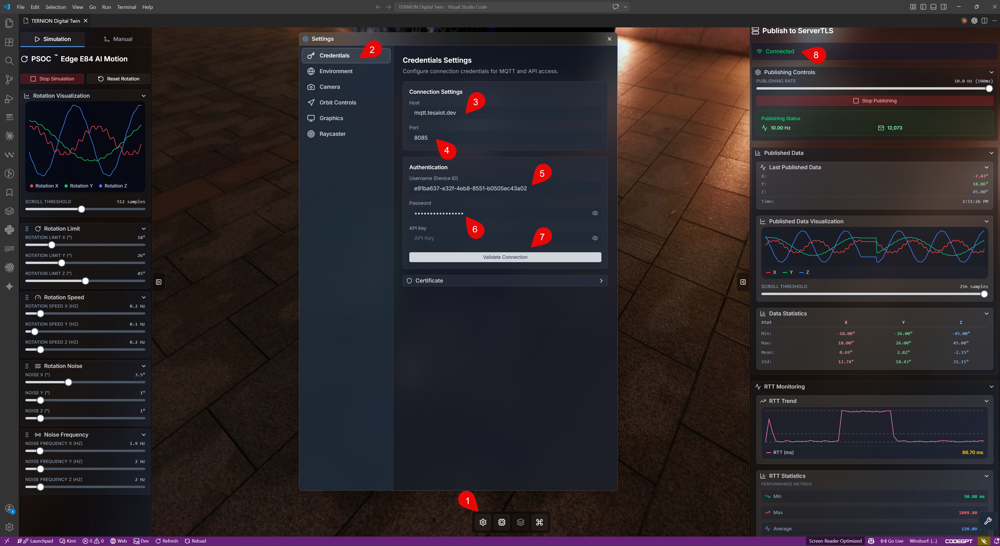
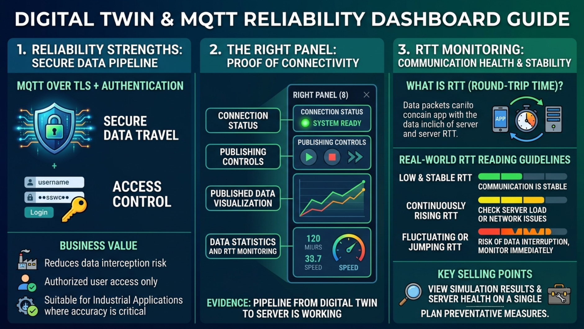
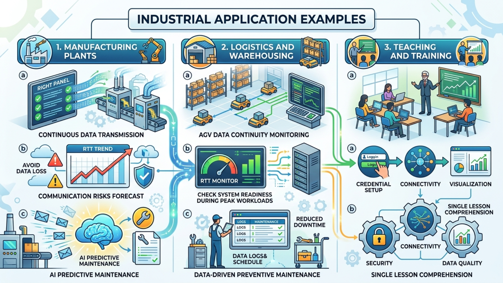

M8 - Credential Setup and Right Panel Visualization: เชื่อมต่ออย่างน่าเชื่อถือและมองเห็นสุขภาพ Server แบบเรียลไทม์
Introduction
หลังจาก M7 ที่เราเรียนรู้เรื่อง Motion Simulation แล้ว บทนี้จะพาเข้าสู่ขั้นตอนที่ทำให้ระบบพร้อมใช้งานจริงในองค์กร คือการตั้งค่า Credential เพื่อเชื่อมต่อเซิร์ฟเวอร์ และการใช้ Panel ด้านขวา เพื่อตรวจผลการทำงานแบบเรียลไทม์
หัวใจของ M8 มี 2 เรื่องสำคัญ:
- การเชื่อมต่อที่เชื่อถือได้ ผ่าน
MQTT over TLSพร้อมUsername/Password - การติดตามสุขภาพระบบ ผ่าน
RTT Monitoringซึ่งเป็นจุดขายสำคัญของแอปพลิเคชันนี้
ทำไมบทนี้จึงสำคัญ
- เชื่อมจากเดโมสู่ระบบจริง: ข้อมูลจาก Digital Twin ถูกส่งไปยัง Server ได้จริง
- น่าเชื่อถือในระดับองค์กร: ใช้ MQTT Server แบบ TLS และยืนยันตัวตนก่อนใช้งาน
- มองเห็นสุขภาพการสื่อสารได้ทันที: RTT ช่วยบอกความเสถียรของระบบแบบใกล้เรียลไทม์
- ตัดสินใจได้เร็วขึ้น: เห็นทั้งสถานะเชื่อมต่อ การ publish และแนวโน้มข้อมูลในหน้าจอเดียว
- พร้อมต่อยอด AI และ Machine Learning (ML): เมื่อข้อมูลส่งต่อเนื่อง ก็พร้อมสำหรับงานวิเคราะห์เชิงลึก
Objective
- ตั้งค่า Credential เพื่อเชื่อมต่อ Server ได้ถูกต้อง
- เข้าใจบทบาทของ
MQTT over TLSและUsername/Passwordต่อความปลอดภัยและความน่าเชื่อถือ - ใช้ Right Panel เพื่อตรวจสถานะการทำงานและคุณภาพข้อมูล
- ใช้
RTT Monitoringเพื่อติดตามสุขภาพ Server และเฝ้าระวังความผิดปกติ
Learning Outcomes
หลังจบบทนี้ คุณจะสามารถ:
- กรอกค่า Credentials ได้ครบและถูกต้อง
- อธิบายจุดแข็งของระบบในมุมความปลอดภัยของข้อมูลได้
- ตรวจสอบสถานะเชื่อมต่อและการส่งข้อมูลจาก Right Panel ได้
- อ่านค่า RTT เพื่อตีความสุขภาพ Server เบื้องต้นได้
วิเคราะห์ภาพรวมจากหน้าจอ M8

จากภาพนี้ เราเห็นโฟลว์ใช้งานครบตั้งแต่ตั้งค่าจนถึงตรวจผล:
- (1) เปิดเมนู Settings
- (2) เข้าแท็บ Credentials
- (3) กรอก Server Host
- (4) กรอก Port
- (5) กรอก Username/Client ID
- (6) กรอก Password หรือ API Key
- (7) กด Validate/Connect
- (8) ตรวจสถานะและกราฟจาก Panel ด้านขวา
ก่อนเริ่มตั้งค่า Credential
- เตรียมข้อมูลจากผู้ดูแลระบบ: Host, Port, Username/Client ID, Password หรือ API Key
- ตรวจว่าเครือข่ายเข้าถึง Server ได้
- ยืนยันว่า Server เปิดใช้
MQTT over TLS(เพื่อเข้ารหัสข้อมูล) - หากองค์กรบังคับใช้ใบรับรอง ให้เตรียม Certificate ตามนโยบาย
ขั้นตอนตั้งค่า Credential (Step-by-step)
วิดีโอสาธิตสำหรับทำตามทีละขั้น: Credential Setup and Right Panel Demo (M8)

1) เปิด Settings และเลือก Credentials
จากหน้าจอหลัก กดปุ่ม Settings (1) แล้วเลือกแท็บ Credentials (2)
2) กรอกข้อมูลการเชื่อมต่อ
กรอกตามลำดับ:
- Server Host (3)
- Port (4)
- Username/Client ID (5)
- Password หรือ API Key (6)
ตรวจตัวสะกดทุกช่องก่อนยืนยัน โดยเฉพาะ Host และ Password/API Key
3) ยืนยันการเชื่อมต่อ
กด Validate/Connect (7) เพื่อทดสอบการเชื่อมต่อ หากผ่าน ระบบจะพร้อม publish ข้อมูล
จุดแข็งด้านความน่าเชื่อถือ: MQTT over TLS + Authentication

แอปพลิเคชันนี้ไม่ได้เน้นแค่การแสดงผล แต่เน้น "ความเชื่อถือได้ของข้อมูล" ตั้งแต่ต้นทาง โดยรองรับ MQTT Server ที่เข้ารหัสด้วย TLS และบังคับยืนยันตัวตนด้วย Username/Password
คุณค่าที่ได้ในเชิงธุรกิจ:
- ข้อมูลเดินทางอย่างปลอดภัย: ลดความเสี่ยงการดักอ่านข้อมูลระหว่างทาง
- ควบคุมสิทธิ์การเข้าถึงได้: จำกัดเฉพาะผู้ใช้หรือระบบที่ได้รับอนุญาต
- เหมาะกับงานอุตสาหกรรมจริง: โดยเฉพาะระบบที่ความถูกต้องและความน่าเชื่อถือสำคัญมาก
การอ่านผลจาก Right Panel Visualization
เมื่อเชื่อมต่อสำเร็จแล้ว ให้ดู Panel ด้านขวา (8) โดยโฟกัส 4 ส่วนหลัก:
- Connection Status: ยืนยันว่าระบบพร้อมใช้งาน
- Publishing Controls: เริ่มหรือหยุดการส่งข้อมูลตามแผนทดสอบ
- Published Data Visualization: ดูแนวโน้มข้อมูลที่ส่งออก
- Data Statistics และ RTT Monitoring: ประเมินคุณภาพข้อมูลและความเสถียรของการสื่อสาร
Right Panel จึงเป็นหลักฐานว่า pipeline ตั้งแต่ Digital Twin ไปถึง Server ทำงานจริง
RTT Monitoring: จุดขายที่ต้องเน้น
RTT (Round-Trip Time) คือเวลาที่ข้อมูลเดินทางไป-กลับระหว่างแอปกับ Server ค่านี้ช่วยให้ทีมมองเห็นสุขภาพการสื่อสารของระบบได้รวดเร็ว
แนวทางอ่านค่า RTT แบบใช้งานจริง:
- RTT ต่ำและนิ่ง: ระบบสื่อสารมีเสถียรภาพดี
- RTT สูงขึ้นต่อเนื่อง: ควรตรวจโหลด Server หรือปัญหาเครือข่าย
- RTT แกว่งหรือกระโดดเป็นช่วง: อาจมีความเสี่ยงข้อมูลขาดช่วง ควรเฝ้าระวังทันที
จุดเด่นคือผู้ใช้มองเห็นทั้ง "ผลการจำลอง" และ "สุขภาพ Server" ได้จากหน้าจอเดียว ทำให้วางแผนแก้ไขเชิงป้องกันได้ก่อนเกิดปัญหาใหญ่
ตัวอย่างการนำไปใช้ในอุตสาหกรรม

-
โรงงานผลิต
- ใช้ Right Panel ยืนยันว่าเครื่องจักรส่งข้อมูลเข้า Server ต่อเนื่อง
- ใช้ RTT Trend ช่วยเตือนความเสี่ยงการสื่อสารก่อนข้อมูลตกหล่น
- ส่งข้อมูลต่อให้ AI เพื่อทำ Predictive Maintenance
-
โลจิสติกส์และคลังสินค้า
- ตรวจความต่อเนื่องข้อมูลของ AGV แบบเรียลไทม์
- ใช้ RTT Monitor ตรวจความพร้อมของระบบช่วงงานหนาแน่น
- ลด downtime ด้วย Preventive Maintenance ที่อิงข้อมูลจริง
-
การสอนและการฝึกอบรม
- สาธิตครบเส้นทางจาก Credential Setup ไปถึง Visualization
- ผู้เรียนเห็นภาพความสัมพันธ์ของ Security, Connectivity และ Data Quality ในบทเดียว
ปัญหาที่พบบ่อยและวิธีแก้เบื้องต้น
- เชื่อมต่อไม่ผ่าน: ตรวจ Host, Port, Username และ Password/API Key อีกครั้ง
- ไม่ขึ้น Connected: ตรวจเครือข่าย, สิทธิ์ใช้งาน และ Certificate (ถ้ามี)
- publish แล้วกราฟไม่วิ่ง: ตรวจว่าแหล่งข้อมูลกำลังทำงาน และลองเริ่ม publish ใหม่
- RTT สูงหรือแกว่งผิดปกติ: ตรวจความเสถียรเครือข่ายและภาระของ Server
ข้อความทิ้งท้าย
M8 คือบทที่ทำให้แพลตฟอร์ม "พร้อมใช้งานจริง" เพราะผู้ใช้ตั้งค่าเชื่อมต่อได้อย่างปลอดภัยผ่าน MQTT over TLS พร้อมยืนยันตัวตน และยังติดตามสุขภาพ Server ได้ผ่าน RTT Monitoring ซึ่งเป็นจุดแข็งสำคัญที่ตอบโจทย์งานอุตสาหกรรมจริง